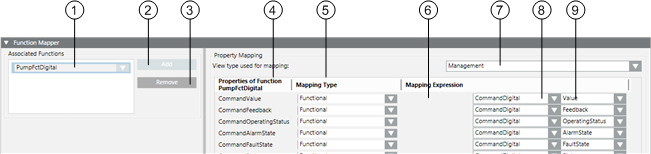
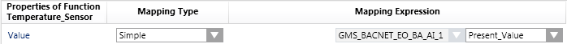
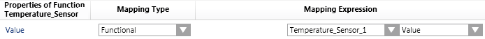
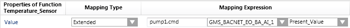
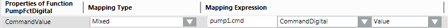

Function Mapper Expander
In the Models & Functions tab, the Function Mapper expander allows you to define the functions associated to an Object Model.

| Name | Description |
1 | Associated Functions | List of all the functions associated to this object model. |
2 | Add | Adds an associated function to the Object Model. |
3 | Remove | Deletes a function from the Associated Functions list. |
4 | Properties of Function | Lists the properties of the function currently selected in the Associated Functions list. |
5 | Mapping Type | Defines mapping type (Simple, Functional, Extended or Mixed). |
7 | View Type Used for Mapping | System Browser view of object references for mapping expressions. |
6 | Mapping Expression | Mapping path to a child |
8 | Mapping Expression | Function used for mapping |
9 | Mapping Expression | Object model property used for mapping |
View Type Used for Mapping

Always use the same mapping view within a system. Otherwise, Desigo CC may not be able to trigger the objects.
Mapping Types
For detailed information on individual options, see Data Model.
- Simple
- The direct mapping of a Function property to the current Object Model.

- Example: The Temperature_Sensor Function maps the Value property to the Object Model property Present_Value.
- Functional
The mapping algorithm starts at the current object and looks for an object with this Function assigned in all child objects in the view selected in View type used for mapping. Mapping to a specific property of such a Function is possible after such an object is found. Then, the property of this Function is mapped to the associated object using the Function Mapper. - Example: The Temperature_Sensor Function maps the Value property to the Temperature_Sensor_1 Function.
- Extended
The path is used to navigate to a child object in the related view as well as to map the configured property of such an object. - Mixed
This type of mapping is similar to the Functional mapping type. It allows users to add a path to the child object; the path is then used to start the selected Functional mapping algorithm. This type can be used to resolve issues, for example, two pumps in a pre-heater with the Function Pump assigned to both. In this case, the pump name can be reference to ensure unique mapping.



The Functional, Extended and Mixed mapping types are used to map child objects. These mapping types serve no purpose if there is no hierarchy.